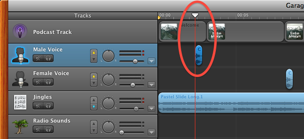
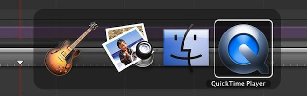
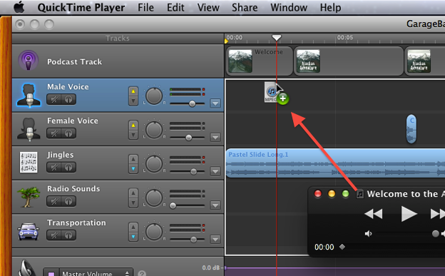
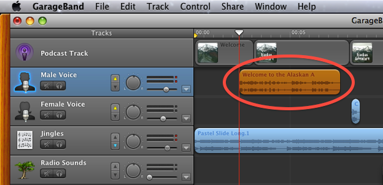

Add Audio Clip to Project
Now that the narration text has been rendered to an audio clip and opened in the QuickTime Player, you are ready to add the clip to the GarageBand podcast project.
DO THIS ► To add an audio clip, follow these steps for each audio clip that is created:
- As you will be dragging audio clips between applications (between the QuickTime Player and GarageBand), make sure that GarageBand is not in full-screen mode.
- In the GarageBand template podacast project, locate the sound clip placeholder for the next narration clip to be placed. It may be on the Male Voice or Female Voice track.
- Move the project playhead cursor to align with the left side of the placeholder clip. (see image below)
- Click once on the placeholder clip to select it, and then press the delete key (⌫) to remove the placholder clip from the track.

- Switch to the QuickTime Player application by typing the Tab key while holding the Command key down (⌘) (see image below)

- With the QuickTime Player application in the foreground, drag the document proxy icon from the audio clip title bar so that it aligns with the playhead cursor over the Male Voice or Female Voice track in GarageBand. (see image below)

- Release the proxy icon and the audio clip will import into the GarageBand project track at the cursor position. (see image below)

Adjusting the Timing of the Clip
Review the use of the narration clip in the GarageBand project by pressing the rewind and play buttons. Take note of when the narration begins and ends. Should any adjustment in the timing of the clip need to be made, simply select and drag the narration clip horizontally on the project track.